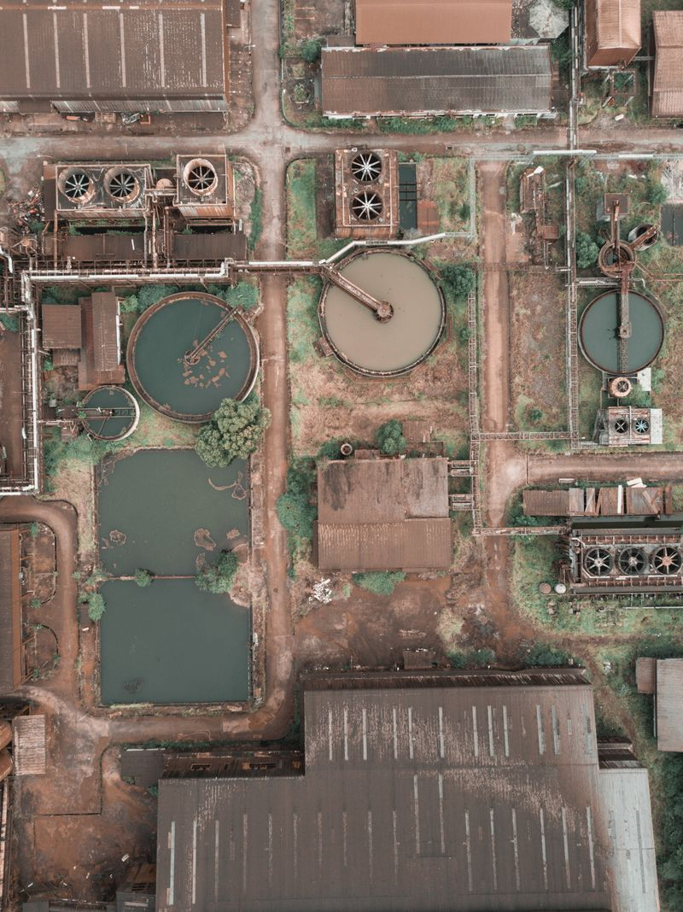
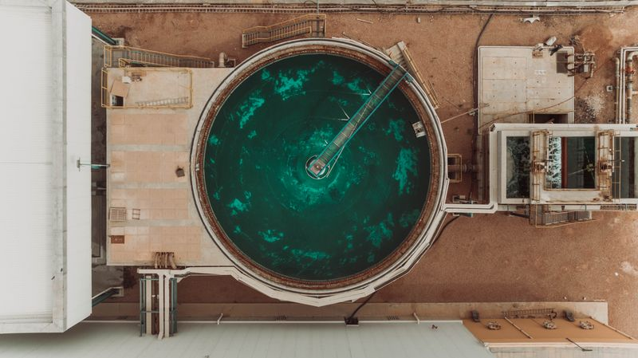

Página 8
Almacenamiento
Tanques de agua producida, rechazo y sistema de tuberías internas


Subtotal Almacenamiento
USD $2,500
COP $9,500,000 (TRM 3,800)
Tanques de agua producida, rechazo y sistema de tuberías internas


COP $9,500,000 (TRM 3,800)